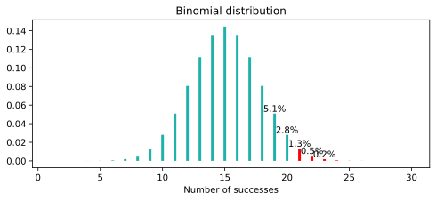
Statistical test
Applied Statistics
Ihor Miroshnychenko
Kyiv School of Economics
Statistical test
Startup idea
But users can cancel the order.
Investors are ready to help if the chance of failure is < 50%.
What should I do?
We are conducting an experiment
- Found 30 customers
- 19 paid for the order
Model and observations
We can’t test the product on everyone, but we can collect a sample from the general population and observe the success rate.
- The audience that will use our service — general population, \(\xi \sim \text{Bernoulli}(\mu)\).
- The share of successful transactions is \(\mu\).
- Sample from the population — \(\xi_1, \xi_2, \ldots, \xi_{30}\).
Problem statement
- Define the hypotheses:
- \(H_0: \mu = 0.5\)
- \(H_1: \mu > 0.5\).
- Determine the test statistics:
\(Q = \xi_1 + \xi_2 + \ldots + \xi_{30} \underset{H_0}{\sim} \text{Binomial}(30, 0.5)\)
- Define the test:
- if \(Q \geq 21\): reject \(H_0\)
- otherwise: do not reject \(H_0\)
But why 21?
- Determine the statistical significance:
- \(\alpha\) — statistical significance of the test, 5%.
- FPR (False Positive Rate) — the probability of rejecting \(H_0\) if it is true.
\(FPR \leq \alpha\)
\[FPR = 1.3\% + 0.5\% + 0.2\% + 0.1\% \approx 2.1\% < 5\%\]
21 vs. 20
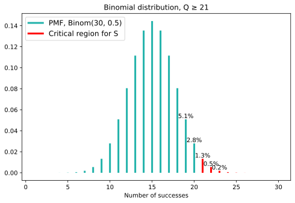
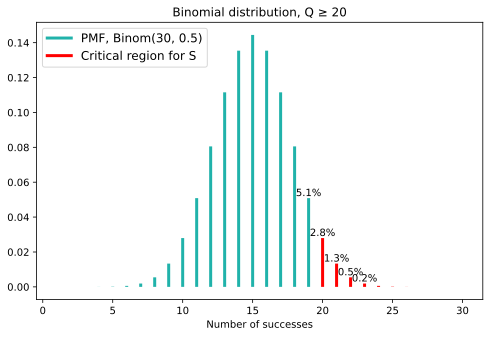
\(FPR_{21} = 1.3\% + 0.5\% + 0.2\% + 0.1\% \approx 2.1\% < 5\%\)
\(FPR_{20} = 2.8\% + 1.3\% + 0.5\% + 0.2\% + 0.1\% \approx 4.9\% < 5\%\)
Solution.
- if \(Q \geq 20\): reject \(H_0\)
- otherwise: do not reject \(H_0\)
So what’s the solution?
- Found 30 customers
- 19 paid for the order
Statistical test and Python
Binomial distribution
- The statistic \(Q\) has a binomial distribution: \(Q \sim \text{Binomial}(30, 0.5)\).
- The probability function of a discrete distribution \(p_{\xi}(x)\) is the probability that a random variable \(\xi\) takes the value \(x\).
# Distribution parameters
n = 30
p = 0.5
x_grid = np.arange(1, n + 1)
probs = binom.pmf(x_grid, n, p)
# Critical region
crit_reg = x_grid >= 20
# Build the plot
fig, ax = plt.subplots(figsize=(15, 7))
colors = np.where(crit_reg, "red", "lightblue")
ax.vlines(x_grid, 0, probs, colors=colors, linewidth=3)
from matplotlib.lines import Line2D
legend_elements = [
Line2D([0], [0], color="lightblue", lw=3, label="PMF, Binom(0.5, 30)"),
Line2D([0], [0], color="red", lw=3, label="Critical region for S"),
]
ax.legend(handles=legend_elements, loc="upper left", fontsize=14)
ax.set_title("Binomial distribution")
ax.set_xlabel("Number of successes")
ax.set_ylabel("Probability")
plt.show()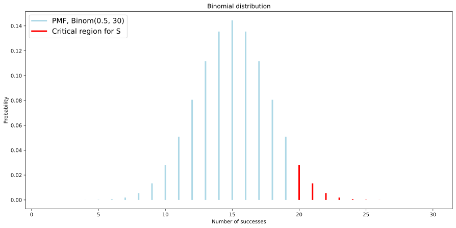
Probability of the critical area
Calculate the sum of the probabilities of success in the critical area.
What if \(Q \geq 19\)?
Then the probability of error is even higher than 10%, which is not good for us at all.
Cumulative distribution function
The cumulative distribution function \(F_{\xi}(x) = P(\xi \leq x)\) is the probability that a random variable \(\xi\) will take a value no greater than \(x\).
In Python it is calculated as binom.cdf(x, n, p).
The probability of getting 19 or fewer successes in our task is \(\geq 95\). And since \(P(\xi \leq 19) + P(\xi \geq 20) = 1\), we can calculate the level of significance of our test.
Quantile
To select the critical region for the test, we would like to find the point where the area of the columns to the right of which is \(5\%\). That is, the area of the columns on the left is \(95\%\). This point is called a quantile. \[u_p(\xi) = \{x | F_{\xi}(x) = p\}\]
But with \(p = 0.95\) and our binomial distribution, there is no such point. We found out that there is a point to the right of which the area is \(0.0494\), and the next one is \(0.1\). To determine the quantile in this case, we modify the definition:
The quantile \(u_p(\xi) = \{x | F_{\xi}(x) \geq p\}\) is a value that \(\xi\) does not exceed with probability at least \(p\).
Quantile: example
For the value \(\xi \sim Bin(30, 0.5)\), let’s calculate the \(0.95\)-quantile. We will solve the problem simply by selection.
\[P(\xi \leq 18) \approx 0.9\]
\[P(\xi \leq 19) \approx 0.951\]
\[P(\xi \leq 20) \approx 0.97\]
In Python we can use the binom.ppf(p, n, p_succ) function.
Custom test function
Now how do we find \(C\) for any \(n, \mu\) and any level of significance \(\alpha\)?
- Find \(C\) such that \(P(Q \geq C) \leq \alpha\).
- That is, you need \(P(Q < C) \geq 1 - \alpha\).
- \(Q\) takes only integer values: \(P(Q \leq C - 1) \geq 1 - \alpha\), or \(P(Q \leq C) \geq 1 - \alpha\).
- So, from the definition of quantile, \(C - 1 = u_{1 - \alpha}\)
- So \(C = u_{1 - \alpha} + 1\)
Custom test function: example
The critical value of \(C = 20\), then the test looks like this:
\[S = \{Q \geq 20\}\]
Additional example
- Number of deliveries — 50
- Sufficient probability of success — 0.1, i.e. if the courier’s work costs 100₴, then the delivery cost is 1000₴.
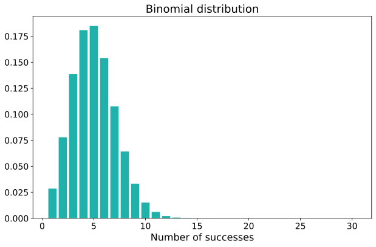
If Q >= 10 then reject H0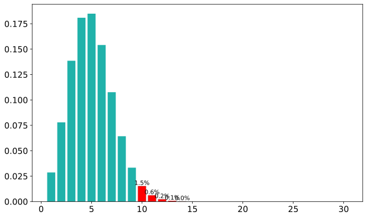
\(p\)-value
\(p\)-value
The \(p\)-value is the probability of obtaining a result that is more extreme than our observations, provided that the null hypothesis \(H_0\) is true.
graph TD
A["n = 30 <br> H0: μ = 0.5 <br> H1: μ > 0.5 <br> α = 0.05"] --> B["If Q >= 20: <br> reject H0"]
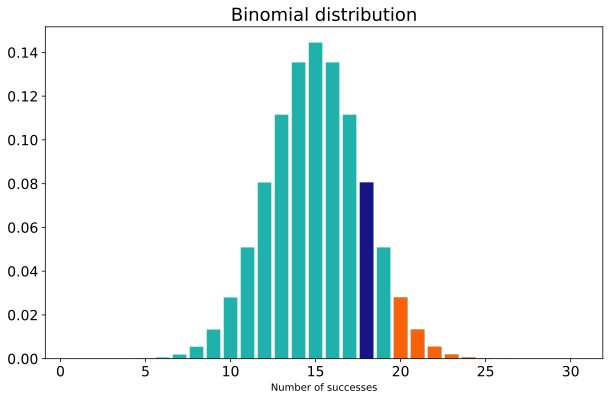
- \(p > \alpha \equiv\) \(q\) outside the critical region \(\equiv\) does not reject \(H_0\).
- \(p \leq \alpha \equiv\) \(q\) in the critical region \(\equiv\) reject \(H_0\).
Statistical test for everyone!
Otherwise: do not reject \(H_0\).
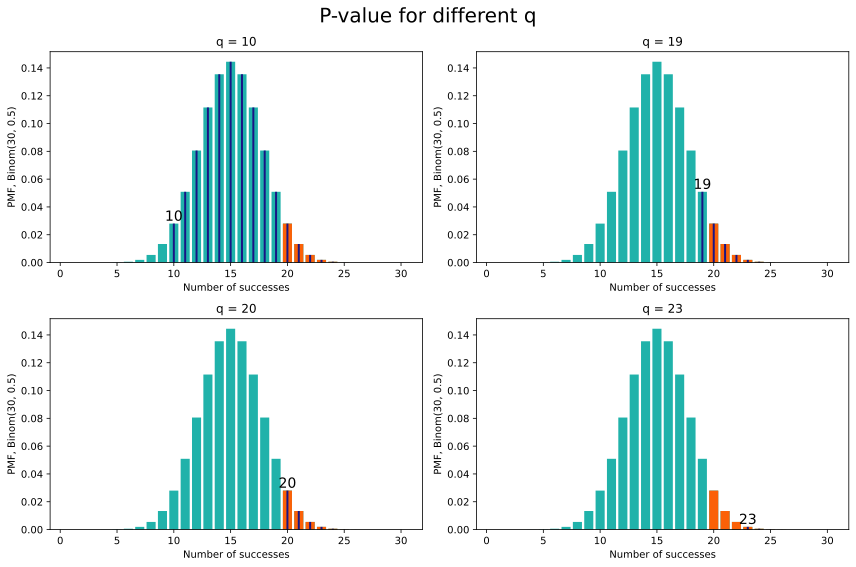
\(p\)-value in Python
p-value = 0.1 >= 0.05
Built-in: scipy.stats.binomtest
Python provides scipy.stats.binomtest that computes p-values and confidence intervals directly — no need to implement pvalue_binom from scratch.
p-value: 0.1002
95% CI: ConfidenceInterval(low=0.4669136700770522, high=1.0)
p-value: 0.0094Our custom function vs. the built-in
pvalue_binom(n, mu, q) and binomtest(k=q, n=n, p=mu, alternative="greater").pvalue compute the same value. Understanding the derivation first makes the built-in a black box you can trust rather than one you must blindly accept.
Two-way test
Two-way test
Does the color of the car affect compliance with traffic rules?
- \(Q = \xi_1 + \xi_2 + \ldots + \xi_{n}\)
- \(H_0: \mu = 0.5\)
- \(H_1: \mu \neq 0.5\)
- \(\alpha = 0.05\)
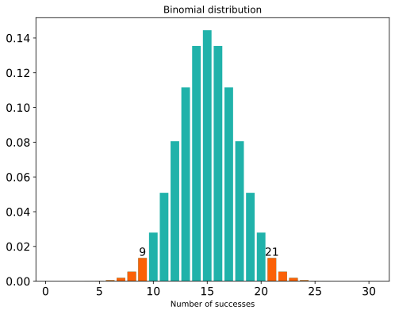
If \(q \geq 21\) or \(q \leq 9\), then we reject \(H_0\).
\(p\)-value for the Two-way test
The rejection region is \[S = \{|Q(\xi) - 15|\ \geq C\}\]
def pvalue_two_sided_sum(n, q):
"""Calculate p-value for two-sided test.
Note: hardcodes the symmetric midpoint as 15, so this function
is only correct for n=30, mu=0.5. For other parameters use
pvalue_two_sided() instead.
"""
binom_h0 = binom.pmf(np.arange(1, n + 1), n, 0.5)
diff = abs(q - 15)
# Right side of the two-sided test (more extreme values on the right)
right_sq = 1 - binom_h0[:15 + diff - 1].sum()
# Left side of the two-sided test (more extreme values on the left)
left_sq = binom_h0[:15 - diff].sum()
return left_sq + right_sq # or 2 * right_sq for a symmetric distribution
Asymmetric distribution
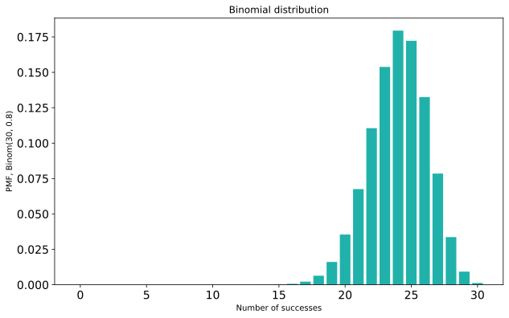
In order to construct a two-sided test, you need to find regions on the left and right whose area is no more than \(\frac{\alpha}{2}\).
Asymmetric distribution: critical region
def two_sided_test_nonsym(n, mu, alpha):
"""Build a two-sided test for the asymmetric delivery problem.
Parameters:
n: number of deliveries in the experiment
mu: probability of success under the null hypothesis
alpha: significance level of the test
Returns:
(c1, c2) for the test S = {Q <= c1 or Q >= c2}
"""
# Analogous to the one-sided test
c2 = int(binom.ppf(1 - alpha / 2, n, mu)) + 1
# Per the derivation above
c1 = int(binom.ppf(alpha / 2, n, mu)) - 1
return c1, c2
Asymmetric distribution: test
So, our test for testing the hypothesis is
\[H_0: \mu = 0.8\] \[H_1: \mu \neq 0.8\]
is as follows:
\[S = \{Q(\xi) \leq 18\} \cup \{Q(\xi) \geq 29\}\]
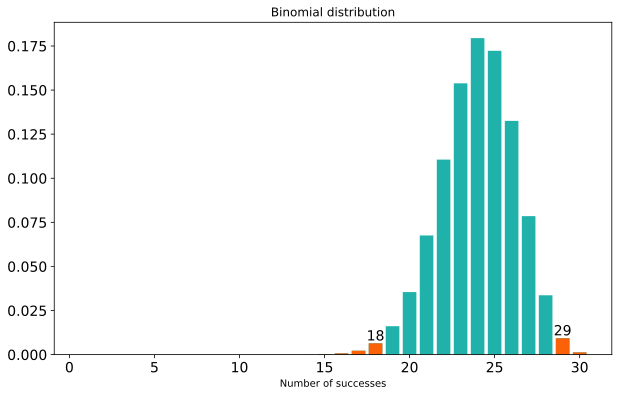
Asymmetric distribution: \(p\)-value
This test is a combination of two significance level criteria \(\frac{\alpha}{2}\), for each of which \(p\)-values can be calculated.
We denote them as \(p_1, p_2\).
The first test is rejected when \(p_1 \leqslant \frac{\alpha}{2}\), the second when \(p_2 \leqslant \frac{\alpha}{2}\).
And ours is unified when one of these conditions is met, i.e.
\[ 2p_1 \leqslant \alpha \vee 2p_2 \leqslant \alpha \Leftrightarrow 2 \cdot \min(p_1, p_2) \leqslant \alpha \]
Asymmetric distribution: \(p\)-value Python
def pvalue_two_sided(n, q, mu=0.5):
"""Compute the p-value for the two-sided alternative in the delivery problem.
Parameters:
n: number of deliveries in the experiment
q: number of successful deliveries
mu: probability of success under H0
"""
# Left tail
pvalue_left = binom.cdf(q, n, mu)
# Right tail
pvalue_right = 1 - binom.cdf(q - 1, n, mu)
return 2 * min(pvalue_left, pvalue_right)
It can be seen that the \(p\)-value is \(> 0.05\), so at a significance level of \(0.05\), even \(28\) successes are not enough to reject the probability of success of \(80\%\).
Power of statistical test
False negative error
Previously, we paid attention only to \(\alpha\) — significance level.
This parameter controls the probability of committing a type I error (FPR, false positive rate): a deviation of \(H_0\) when it is actually true.
In business terms, how many inefficient projects are we willing to invest resources in?
Yes!!! To do this, it is enough to never discard \(H_0\)
\[ S \equiv 0, \alpha = 0 \]
If there is a Type I error, there is also a Type II error — False Negative Rate (FNR): accepting \(H_0\) when \(H_1\) is actually true.
In business terms: how many effective projects are we willing to miss?
\[ \beta = \text{FNR} = \mathbb{P}(S=0|H_1) \]
Test for time of year ❄️☀️
\[ H_0: \text{it's summer outside} \]
\[ H_1: \text{it's not summer outside} \]
\[ \begin{equation} Q = \begin{cases} 1, & \text{if it is snowing outside} \\ 0, & \text{otherwise} \end{cases} \end{equation} \]
\[ \begin{equation} S = Q = \begin{cases} 1, & \text{if }Q = 1, \text{ reject } H_0 \\ 0, & \text{if }Q = 0, \text{ do not reject } H_0 \end{cases} \end{equation} \]
\[ \alpha = \text{FPR} = \mathbb{P}(\text{it's snowing}|\text{it's summer}) < 0.001 \]
\[ \beta = \text{FNR} = \mathbb{P}(\text{it is not snowing}|\text{it is not summer}) > 0.9 \]
As you can see, the test is quite useless.
The power of a statistical test (power, True Positive Rate) is the probability of correctly rejecting \(H_0\) when it is truly false, i.e., the ability to detect an effect if it really exists.
\[ \text{Power} = 1 - \beta = \mathbb{P}(S=1|H_1) \]
In our example: \(\text{Power} = 1 - 0.9 = 0.1\).
Error types: summary
| \(H_0\) is true | \(H_0\) is false | |
|---|---|---|
| Do not reject \(H_0\) | ✅ Correct (\(1 - \alpha\)) | ❌ Type II error (\(\beta\), FNR) |
| Reject \(H_0\) | ❌ Type I error (\(\alpha\), FPR) | ✅ Correct (Power \(= 1 - \beta\)) |
Key trade-off
Decreasing \(\alpha\) (fewer false positives) increases \(\beta\) (more false negatives) for a fixed sample size \(N\). The only way to reduce both simultaneously is to increase \(N\).
Power
Let’s recall the delivery task:
\(H_0: \mu = 0.5 \\H_1: \mu > 0.5 \\Q = \text{number of confirmed orders} \\\alpha = 0.05 \\ S = \{Q \geq 20\}\)
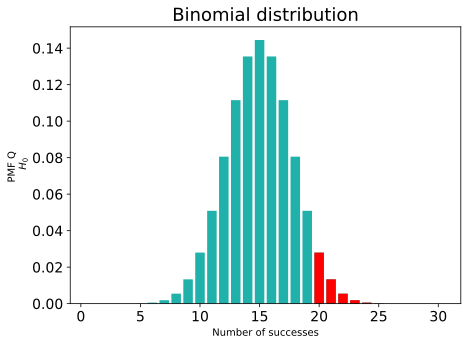
Suppose that \(H_1\) is true: \(\mu = 0.6\).
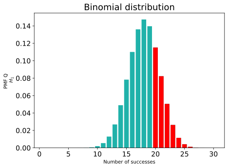
\[\text{Power} = \mathbb{P}(Q \geq 20|\mu = 0.6)\]
\[\text{Power} = \mathbb{P}(Q \geq 20|\mu = 0.6)\]
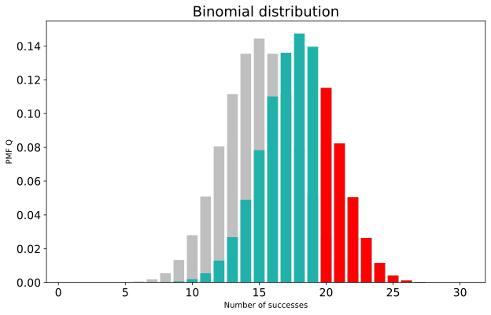
False Positive Rate is 4.9%
Power is 29.1%You can see that the power is about \(30\%\). This is quite a small value, because if our product is profitable, we will only see it with a probability of \(30\) percent using our test. We can easily miss the effect.
Python and the power
Let’s see what happens if we conduct an experiment with 300 customers.
Python and the power
It is generally accepted that \(80\%\) of power is considered acceptable for work.
Let’s see how the power changes as the sample size increases, and how many experiments are needed to detect the effect at \(\mu=0.6\) in \(80\%\) of cases.
Code
n_grid = np.arange(10, 601, 10)
power = np.array([get_stat_power(N, mu_h0=0.5, mu_alternative=0.6, alpha=0.05) for N in n_grid])
min_n = n_grid[power >= 0.8].min()
fig, ax = plt.subplots(figsize=(10, 5))
ax.plot(n_grid, power)
ax.axhline(0.8, linestyle="--", color="red")
ax.axvline(min_n, linestyle="--", color=turquoise)
ax.text(min_n + 5, 0.1, f"N = {min_n}", color=turquoise, fontsize=13)
ax.set_xlabel("Sample size N", fontsize=13)
ax.set_ylabel("Power", fontsize=13)
ax.tick_params(labelsize=13)
plt.show()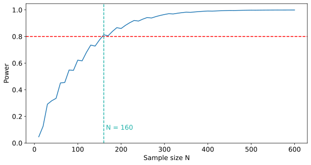
Python and the power
What if we want to detect an even smaller effect? For example, if we want to reject the hypothesis at \(\mu = 0.51\). Often, an improvement in the probability of success by \(1\%\) can be significant for a product, so this question is not without meaning.
Code
n_grid = np.arange(10, 30001, 59)
power = np.array([get_stat_power(N, mu_h0=0.5, mu_alternative=0.51, alpha=0.05) for N in n_grid])
min_n = n_grid[power >= 0.8].min()
fig, ax = plt.subplots(figsize=(10, 5))
ax.plot(n_grid, power)
ax.axhline(0.8, linestyle="--", color="red")
ax.axvline(min_n, linestyle="--", color=turquoise)
ax.text(min_n + 200, 0.1, f"N = {min_n}", color=turquoise, fontsize=13)
ax.set_xlabel("Sample size N", fontsize=13)
ax.set_ylabel("Power", fontsize=13)
ax.tick_params(labelsize=13)
plt.show()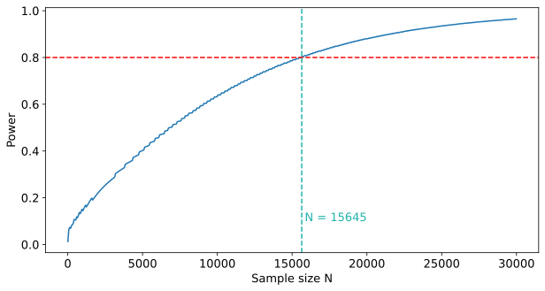
Before each experiment, the analyst should think about test duration and number of participants.
To do this, you need to understand:
- What effect is practically significant for the task?
- How many subjects will it take to detect this effect more often than \(80\%\) of the time?
Python and the power
The graphs show that a larger sample size is required to detect a smaller effect.
Let’s see how the power changes for different parameters \(\mu\) for a fixed \(N = 30\).
Code
mu_grid = np.linspace(0.5, 1, 500)
power = np.array([get_stat_power(30, mu_h0=0.5, mu_alternative=mu, alpha=0.05) for mu in mu_grid])
fig, ax = plt.subplots(figsize=(10, 5))
ax.plot(mu_grid, power)
ax.axhline(0.8, linestyle="--", color="red")
ax.axvline(mu_grid[power >= 0.8].min(), linestyle="--", color=turquoise)
ax.set_title("Power for $N = 30$")
ax.set_xlabel(r"$\mu$")
ax.set_ylabel("Power")
ax.tick_params(labelsize=13)
ax.title.set_fontsize(18)
plt.show()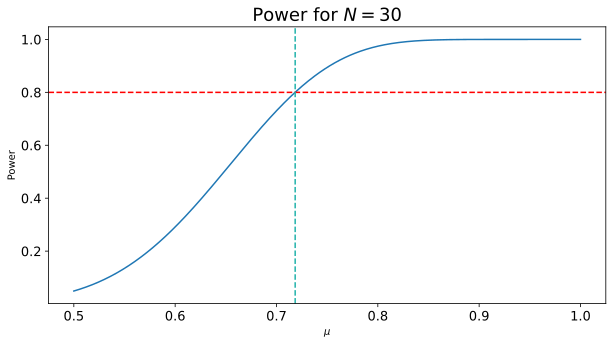
In our experiment, we detect an effect well only if the probability of success in the population is at least \(72\%\).
Minimum detectable effect (MDE)
Minimum detectable effect
Minimal Detectable Effect (MDE, Minimal Detectable Effect) — this is the smallest effect that we can detect with an experiment (usually at \(80\%\) power).
In our example, \(\text{MDE} = +0.22\)
More formally
\(\text{MDE}\) for the hypothesis \(\mathsf{H}_0: \mu = \mu_0\) — this is the minimum effect of \(\delta\) at which the significance level test \(\alpha\) for testing this hypothesis, given the true parameter \(\mu = \mu_0 + \delta\) and sample size \(N\), will reject \(\mathsf{H}_0\) with power greater than \(1 - \beta\).
Python and MDE
def binom_test_mde_one_sided(N, mu0, alpha=0.05, min_power=0.8):
# Grid of possible effects (delta)
delta_grid = np.linspace(0, 1 - mu0, 500)
# Compute power for each delta
power = np.array([get_stat_power(N, mu0, mu0 + delta, alpha) for delta in delta_grid])
# First delta for which power >= min_power
fit_delta = delta_grid[power >= min_power]
return fit_delta[0] if len(fit_delta) > 0 else None
Usually, \(\text{MDE}\) is calculated for a reason, and the question of determining the sample size goes hand in hand with it.
Determining the sample size
In our task, we found \(30\) customers without first calculating how many of them we would need. But what if the resulting \(\text{MDE}\) is too large and you need to make it smaller because the expected changes are much smaller? Then the opposite problem is solved: given the required \(\text{MDE}\), determine the sample size. If we say that we want to detect \(+10\) pp, i.e. \(60\%\) of successful deliveries, then we need to find 160 test customers, as you can see from the previous graphs. If we search for 30 people for a month, for example, such a test can take almost six months. Therefore, it is worth considering allocating additional resources to find customers, for example, by engaging marketers.
Confidence intervals
Confidence interval
Confidence interval (CI, confidence interval) — the set of values of the parameter \(\mu_0,\) for which the hypothesis \(\mu = \mu_0\) is not rejected by the significance level test \(\alpha\) with a known probability \(\geq 1 - \alpha\).
The definition implies that different criteria can give rise to different confidence intervals. In this section, we will consider what intervals are generated by a two-sided test.
To do this, we will use \(\mu \in [0, 1]\) in increments of \(0.001\) and test the hypotheses.
Python and confidence interval
success_cnt = 19
mu_grid = np.arange(0, 1 + 1e-9, 0.001)
mu_no_rejection = []
for mu_h0 in mu_grid:
c1, c2 = two_sided_test_nonsym(30, mu_h0, alpha=0.05)
if success_cnt > c1 and success_cnt < c2:
mu_no_rejection.append(mu_h0)
print(f"95% confidence interval: {min(mu_no_rejection):.3f} -- {max(mu_no_rejection):.3f}")95% confidence interval: 0.439 -- 0.800We do not reject \(H_0\)!
success_cnt = 28
mu_grid = np.arange(0, 1 + 1e-9, 0.001)
mu_no_rejection = []
for mu_h0 in mu_grid:
c1, c2 = two_sided_test_nonsym(30, mu_h0, alpha=0.05)
if success_cnt > c1 and success_cnt < c2:
mu_no_rejection.append(mu_h0)
print(f"95% confidence interval: {min(mu_no_rejection):.3f} -- {max(mu_no_rejection):.3f}")95% confidence interval: 0.780 -- 0.991We reject \(H_0\)!
Code
mus_h0 = [0.2, 0.438, 0.439, 0.8, 0.81, 0.9]
success_cnt = 19
x_grid = np.arange(0, 31)
fig, axes = plt.subplots(2, 3, figsize=(14, 8))
axes = axes.flatten()
for ax, mu_h0 in zip(axes, mus_h0):
probs = binom.pmf(x_grid, 30, mu_h0)
c1 = int(binom.ppf(0.025, 30, mu_h0))
c2 = int(binom.ppf(0.975, 30, mu_h0))
reject = (x_grid < c1) | (x_grid > c2)
colors = np.where(reject, "red", turquoise)
ax.bar(x_grid, probs, color=colors, width=0.8)
ax.axvline(19, linestyle="--", color="black")
prob_19 = binom.pmf(19, 30, mu_h0)
label = "Reject" if reject[19] else "Do not reject"
ax.text(19, 0.1, label, ha='center', va='bottom')
ax.set_title(f"μ = {mu_h0}")
plt.tight_layout()
plt.show()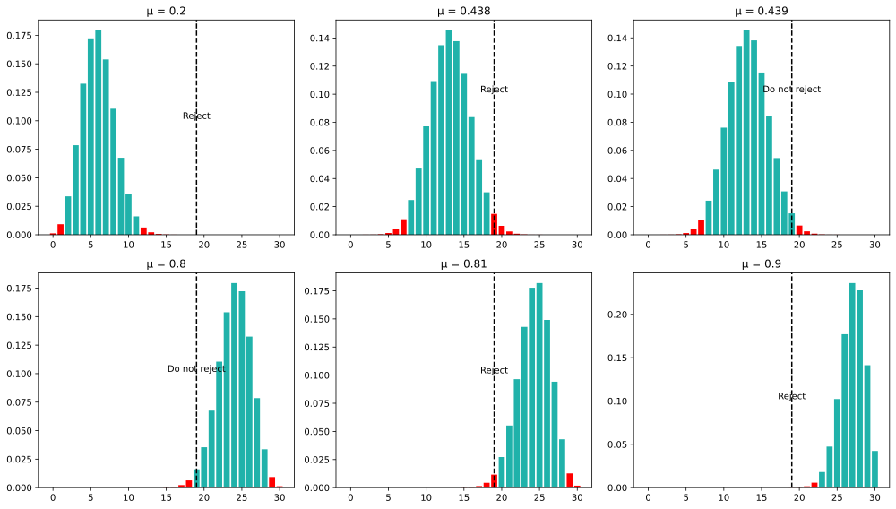
One-sided confidence intervals
In the last part, we used a two-sided test and derived a confidence interval from it.
But in the last lecture, we said that the two-sided test is needed extremely rarely.
We need to control the False Positive error only for deviations in the direction that is useful for the business.
In the case of a delivery task, this is getting a larger conversion to success.
Let’s try to use a one-sided test to build a confidence interval.
Python and one-sided CI
success_cnt = 19
mu_grid = np.arange(0, 1 + 1e-9, 0.001)
mu_no_rejection = []
for mu_h0 in mu_grid:
c1, c2 = two_sided_test_nonsym(n=30, mu=mu_h0, alpha=0.1)
if success_cnt > c1 and success_cnt < c2:
mu_no_rejection.append(mu_h0)
print(f"Two-sided 90% confidence interval: {min(mu_no_rejection):.3f} -- {max(mu_no_rejection):.3f}")Two-sided 90% confidence interval: 0.467 -- 0.778When we used a two-sided interval, we got a left-handed bound of \(0.439 < 0.467\).
It turns out that the one-sided interval gives us more information from the point of view of the left bound. At the same time, from the point of view of the right bound, we lose information completely. It is equal to 1 simply because the probability cannot be greater.
In fact, the right-hand side is usually not looked at in an analysis when we are looking for a positive effect.
Python and one-sided CI
Let’s say we got \(22\) instead of \(19\) of successes. Let’s plot 2 types of intervals.
success_cnt = 22
mu_grid = np.arange(0, 1 + 1e-9, 0.001)
mu_no_rejection = []
for mu_h0 in mu_grid:
c1, c2 = two_sided_test_nonsym(n=30, mu=mu_h0, alpha=0.05)
if success_cnt > c1 and success_cnt < c2:
mu_no_rejection.append(mu_h0)
print(f"Two-sided 95% confidence interval: {min(mu_no_rejection):.3f} -- {max(mu_no_rejection):.3f}")Two-sided 95% confidence interval: 0.542 -- 0.877
success_cnt = 22
mu_grid = np.arange(0, 1 + 1e-9, 0.001)
mu_no_rejection = []
for mu_h0 in mu_grid:
crit_val = make_binom_test(n=30, mu=mu_h0, alpha=0.05)
if success_cnt < crit_val:
mu_no_rejection.append(mu_h0)
print(f"One-sided 95% confidence interval: {min(mu_no_rejection):.2f} -- {max(mu_no_rejection):.3f}")One-sided 95% confidence interval: 0.57 -- 1.000Python and one-sided CI
So why do we use two-sided CI at all? To understand this, let’s see what the borders look like for a one-sided CI.
Code
mus_h0 = [0.2, 0.438, 0.439, 0.8, 0.81, 0.9]
success_cnt = 19
x_grid = np.arange(0, 31)
fig, axes = plt.subplots(3, 2, figsize=(12, 10))
axes = axes.flatten()
for ax, mu_h0 in zip(axes, mus_h0):
probs = binom.pmf(x_grid, 30, mu_h0)
# One-sided test: 5% upper tail
c = int(binom.isf(0.05, 30, mu_h0))
reject = x_grid >= c
colors = np.where(reject, "red", turquoise)
ax.bar(x_grid, probs, color=colors, width=0.8)
ax.axvline(19, linestyle="--", color="black")
label = "Reject" if reject[19] else "Do not reject"
ax.text(19, 0.1, label, ha='center', va='bottom')
ax.set_title(f"μ = {mu_h0}")
plt.tight_layout()
plt.show()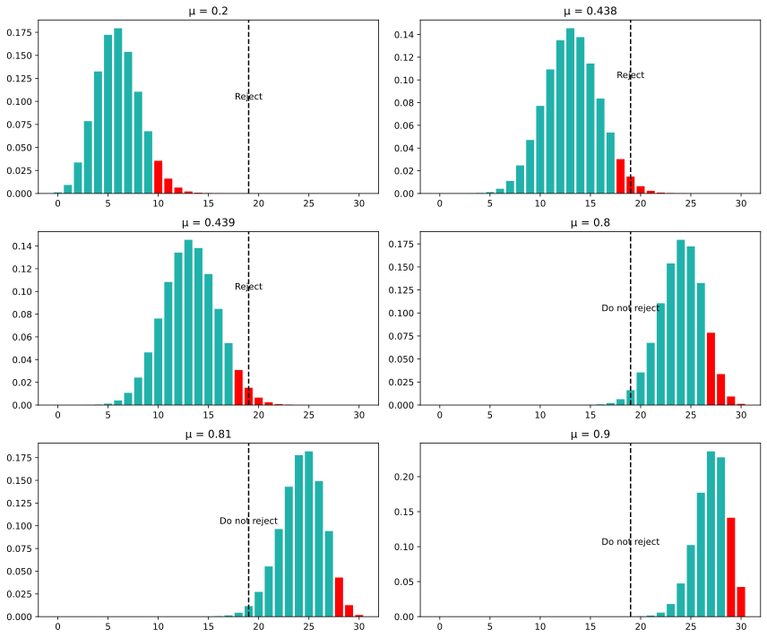
The critical region has become larger because it now contains not \(2.5\%\), but \(5\%\) by construction. At the same time, the left critical region simply does not exist, so at large \(\mu\) \(19\) does not fall into it, and thus we do not reject the hypothesis.
Note that if we were to construct a two-sided interval, but with twice the \(\alpha\), hits in the right critical region would occur at the same \(\mu\) as in the one-sided test. Therefore, often to find a one-sided limit, a two-sided confidence interval with a larger \(\alpha\) is constructed, ignoring the right-hand side. This is convenient because you can use only one function for a test.
Python and one-sided CI
Let’s check what happens when \(\alpha = 0.1\).
success_cnt = 19
mu_grid = np.arange(0, 1 + 1e-9, 0.001)
mu_no_rejection = []
for mu_h0 in mu_grid:
c1, c2 = two_sided_test_nonsym(n=30, mu=mu_h0, alpha=0.1)
if success_cnt > c1 and success_cnt < c2:
mu_no_rejection.append(mu_h0)
print(f"Two-sided 90% confidence interval: {min(mu_no_rejection):.3f} -- {max(mu_no_rejection):.3f}")Two-sided 90% confidence interval: 0.467 -- 0.778Confidence interval property
Whatever the true value of \(\mu = \mu_0\), the probability that it is between \(\mathcal{L}(Q)\) and \(\mathcal{R}(Q)\) is at least \(1 - \alpha\).
The value \(1 - \alpha\) is called the confidence level of the confidence interval.
\[ P(\mathcal{L}(Q) < \mu_0 < \mathcal{R}(Q)) \geqslant 1 - \alpha \]
It is important that the randomness here is hidden in \(\mathcal{L}\) and \(\mathcal{R}\), not in \(\mu_0\).
The parameter \(\mu_0\) is unknown, but we assume it to be constant and not random.
Common misinterpretation
❌ “There is a 95% probability that \(\mu_0\) lies in this interval.”
✅ “If we repeated the experiment many times and built a CI each time, at least 95% of those intervals would contain the true \(\mu_0\).”
The interval is random; the parameter is not.
Checking the property
To do this, we fix \(\mu_0\) and conduct a set of experiments:
- Draw a sample from the distribution with parameter \(\mu_0\).
- Calculate the statistic \(q\).
- Calculate the confidence interval for \(\alpha = 0.05\).
Check that the proportion of cases when the parameter \(\mu_0\) is inside the interval is at least \(95\%\)
def my_binomial_confint(n, alpha, q):
mu_grid = np.arange(0, 1 + 1e-9, 0.001)
mu_no_rejection = []
for mu_h0 in mu_grid:
c1, c2 = two_sided_test_nonsym(n=30, mu=mu_h0, alpha=0.05)
if q > c1 and q < c2:
mu_no_rejection.append(mu_h0)
return min(mu_no_rejection), max(mu_no_rejection)
np.random.seed(73)
N_EXPERIMENTS = 1000
SAMPLE_SIZE = 30
latent_mu = 0.5 # "True" value of the parameter
confint_fail_cases = 0
for i in range(N_EXPERIMENTS):
q = binom.rvs(SAMPLE_SIZE, latent_mu)
lo, hi = my_binomial_confint(n=SAMPLE_SIZE, alpha=0.05, q=q)
if not (lo < latent_mu < hi):
confint_fail_cases += 1
print(1 - confint_fail_cases / N_EXPERIMENTS)0.962But it takes a long time! This is because during each experiment you need to build a confidence interval, and therefore test 1000 possible parameters \(\mu_0\).
Wilson confidence interval
The algorithm for building a confidence interval that we have just discussed takes too long. Python has functions that allow you to calculate the interval faster. For example, you can use the Wilson method via statsmodels.stats.proportion.proportion_confint(method="wilson").
np.random.seed(111)
N_EXPERIMENTS = 1000
SAMPLE_SIZE = 30
latent_mu = 0.5 # "True" value of the parameter
confint_fail_cases = 0
for i in range(N_EXPERIMENTS):
q = binom.rvs(SAMPLE_SIZE, latent_mu)
lo, hi = proportion_confint(q, SAMPLE_SIZE, alpha=0.05, method="wilson")
if not (lo < latent_mu < hi):
confint_fail_cases += 1
print(1 - confint_fail_cases / N_EXPERIMENTS)0.962Coverage is above nominal — is that a problem?
For a discrete distribution the coverage can never be exactly \(1 - \alpha\) for all \(\mu\): it is always somewhat above the nominal level. This is a known property of binomial CIs. Getting \(0.96\) instead of \(0.95\) means the interval is slightly conservative — it is wider than strictly necessary, but it never under-covers. 😢 refers to the fact that we can’t achieve exact \(95\%\) coverage, not that the interval is wrong.
Wilson’s CI vs. N
The dependence of the proportion of successful hits \(\mu\) in the confidence interval on the sample size is shown in the graph.
Code
np.random.seed(73)
N_EXPERIMENTS = 1000
latent_mu = 0.5
n_grid = np.arange(1, 1001, 25)
interval_success_rate = np.zeros(len(n_grid))
for j, n in enumerate(n_grid):
confint_fail_cases = 0
for i in range(N_EXPERIMENTS):
q = binom.rvs(n, latent_mu)
lo, hi = proportion_confint(q, n, alpha=0.05, method="wilson")
if not (lo < latent_mu < hi):
confint_fail_cases += 1
interval_success_rate[j] = 1 - confint_fail_cases / N_EXPERIMENTS
fig, ax = plt.subplots(figsize=(10, 5))
ax.plot(n_grid, interval_success_rate)
ax.axhline(0.95, linestyle="--", color="red")
ax.set_xlabel("Sample size N", fontsize=13)
ax.set_ylabel("Coverage", fontsize=13)
ax.tick_params(labelsize=13)
plt.show()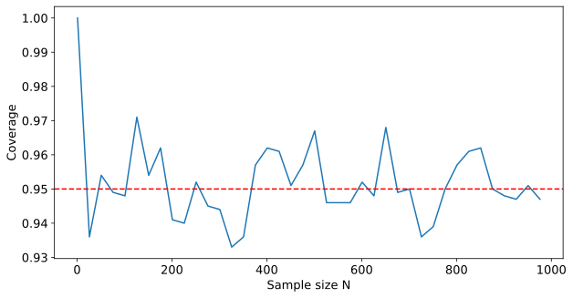
A/A test
Why do we need an A/A test?
We have built a complete statistical machine: tests, \(p\)-values, CIs, power, MDE.
But before launching a real A/B test, a fair question arises:
Imagine our delivery service:
We split customers into two groups: A and A’ Both groups receive the same product and the same conditions We run the test as if it were a real A/B test
By construction, there is no real difference between the groups — only random fluctuation. The test must reject \(H_0\) no more often than \(\alpha = 5\%\).
A/A test: the idea
If \(H_0\) is true and the test is correctly constructed, then:
- \(P(\text{reject } H_0 \mid H_0) = \alpha\) — by definition of significance level.
- The \(p\)-value is uniformly distributed on \([0, 1]\) (for continuous distributions).
- The proportion of significant results across many A/A tests should be close to \(\alpha\).
Practical algorithm
- Run \(N\) identical experiments under \(H_0\).
- For each, compute the \(p\)-value.
- Plot the distribution of \(p\)-values.
- Check that the proportion of \(p \leq \alpha\) is close to \(\alpha\).
A/A test: simulation
Let’s simulate 10000 A/A tests for our delivery problem with \(n = 30\) and \(\mu = 0.5\).
np.random.seed(73)
N_EXPERIMENTS = 10000
SAMPLE_SIZE = 30
mu_true = 0.5
p_values = np.zeros(N_EXPERIMENTS)
for i in range(N_EXPERIMENTS):
# Draw a sample under H0
q = binom.rvs(SAMPLE_SIZE, mu_true)
# Compute the p-value of a two-sided test
p_values[i] = pvalue_two_sided(SAMPLE_SIZE, q, mu=0.5)
# Fraction of false rejections
fpr_empirical = (p_values <= 0.05).mean()
print(f"Empirical FPR: {fpr_empirical:.4f}")Empirical FPR: 0.0417A/A test: \(p\)-value distribution
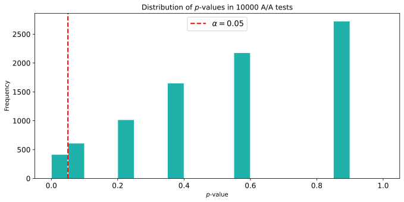
The distribution is approximately uniform — exactly what we expect from a correctly working test. The “stepped” pattern is a consequence of the discrete binomial distribution.
What if A/A fails?
If the empirical FPR is much higher than \(\alpha\) — this is a signal:
Poor randomization — the groups are not truly independent (e.g., the same user lands in both groups) Data leakage — events from group A leak into group B Sample Ratio Mismatch (SRM) — group sizes deviate from the planned proportion (e.g., 60/40 instead of 50/50) Temporal effect — groups were exposed at different times (weekday vs. weekend, day vs. night)
In practice
Large companies (Microsoft, Booking, Netflix) run continuous A/A testing in the background to monitor the health of their experimentation platform.
Multiple comparisons
Problem statement
In a real A/B test we rarely look at just one metric. For our delivery service we might track:
Conversion to a successful order Average order value Delivery time Customer rating Retention - … and another 15 business metrics
Multiple comparisons: math
If each test independently has the property \(P(\text{reject } H_0 \mid H_0) = \alpha\), then the probability of at least one false rejection in \(k\) tests is:
\[ \text{FWER} = P(\text{at least 1 FP}) = 1 - (1 - \alpha)^k \]
where FWER — Family-Wise Error Rate.
| \(k\) | FWER at \(\alpha=0.05\) |
|---|---|
| 1 | 5% |
| 5 | 23% |
| 10 | 40% |
| 20 | 64% |
| 50 | 92% |
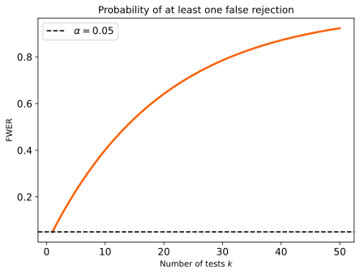
Multiple comparisons: simulation
10000 A/B experiments, each with 20 independent metrics, all under \(H_0\):
np.random.seed(73)
N_EXPERIMENTS = 10000
N_METRICS = 20
SAMPLE_SIZE = 30
mu_true = 0.5
alpha = 0.05
at_least_one_fp = 0
for _ in range(N_EXPERIMENTS):
# Simulate 20 independent metrics under H0
p_vals = np.array([
pvalue_two_sided(SAMPLE_SIZE, binom.rvs(SAMPLE_SIZE, mu_true), mu=0.5)
for _ in range(N_METRICS)
])
# Did at least one false rejection occur?
if (p_vals <= alpha).any():
at_least_one_fp += 1
fwer_empirical = at_least_one_fp / N_EXPERIMENTS
fwer_theoretical = 1 - (1 - alpha) ** N_METRICS
print(f"Empirical FWER: {fwer_empirical:.4f}")
print(f"Theoretical FWER: {fwer_theoretical:.4f}")Empirical FWER: 0.5848
Theoretical FWER: 0.6415Bonferroni correction
The simplest solution: tighten the significance level for each individual test.
\[ \alpha_{\text{adjusted}} = \frac{\alpha}{k} \]
where \(k\) — the number of comparisons.
For our example with 20 metrics: \(\alpha_{\text{adj}} = 0.05 / 20 = 0.0025\).
Why does it work?
By Boole’s inequality: \[ P\left(\bigcup_{i=1}^{k} A_i\right) \leq \sum_{i=1}^{k} P(A_i) = k \cdot \frac{\alpha}{k} = \alpha \]
The total error is bounded from above by \(\alpha\).
Bonferroni: simulation
np.random.seed(73)
N_EXPERIMENTS = 10000
N_METRICS = 20
SAMPLE_SIZE = 30
mu_true = 0.5
alpha = 0.05
alpha_bonf = alpha / N_METRICS
at_least_one_fp = 0
for _ in range(N_EXPERIMENTS):
p_vals = np.array([
pvalue_two_sided(SAMPLE_SIZE, binom.rvs(SAMPLE_SIZE, mu_true), mu=0.5)
for _ in range(N_METRICS)
])
# Compare against the adjusted alpha
if (p_vals <= alpha_bonf).any():
at_least_one_fp += 1
fwer_corrected = at_least_one_fp / N_EXPERIMENTS
print(f"FWER after Bonferroni: {fwer_corrected:.4f}")FWER after Bonferroni: 0.0269
Cost of the correction
Bonferroni reduces FWER, but drastically reduces power. For 20 metrics with \(\alpha_{\text{adj}} = 0.0025\) we need a significantly larger sample size to detect an effect.
In practice, less conservative methods are used (Holm, Benjamini-Hochberg / FDR), but the principle is the same: more tests \(\Rightarrow\) a stricter criterion.
Peeking problem
Temptation to peek
Imagine: we are running an A/B test for 30 days. Every morning the analyst opens the dashboard and looks at the current \(p\)-value.
On day 7 he sees: \(p = 0.04\). 🎉
What’s wrong?
Statistical theory assumes that the test runs once at a fixed sample size \(N\). As soon as you start looking at results in the middle, the FPR is no longer \(\alpha\) — it grows.
Peeking: simulation
Scenario: \(\mu_A = \mu_B = 0.5\) (no real effect). Each day a new customer is added. The test is stopped as soon as \(p \leq 0.05\).
np.random.seed(73)
N_EXPERIMENTS = 2000
MAX_N = 100
mu = 0.5
alpha = 0.05
stopped_early = 0 # how many experiments were stopped due to peeking
for _ in range(N_EXPERIMENTS):
# Generate the full sample
sample = binom.rvs(1, mu, size=MAX_N)
# Check the p-value at every step starting from n=10
for n in range(10, MAX_N + 1):
q = sample[:n].sum()
p_val = pvalue_two_sided(n, q, mu=0.5)
if p_val <= alpha:
stopped_early += 1
break
peeking_fpr = stopped_early / N_EXPERIMENTS
print(f"FPR with daily peeking: {peeking_fpr:.4f}")
print(f"Expected FPR (no peek): {alpha}")FPR with daily peeking: 0.2010
Expected FPR (no peek): 0.05Peeking: visualization
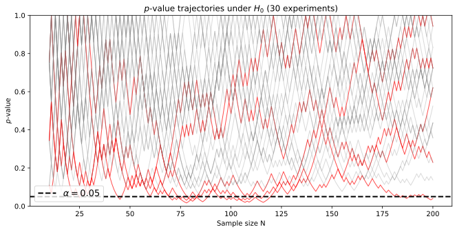
Each red line is a trajectory that “accidentally” crossed \(\alpha = 0.05\) at some moment. With daily checks — a substantial share of experiments will give a false positive.
How to avoid peeking?
Solution 1: Fix \(N\) in advance
Solution 2: Sequential testing methods
Special methods that allow continuous checking while controlling FPR:
Sequential Probability Ratio Test (SPRT) — Wald Group Sequential Designs — O’Brien-Fleming, Pocock Always-Valid Inference — anytime-valid \(p\)-values, e-values
Used at large tech companies: Optimizely, Netflix, Microsoft.
Three pitfalls: connection
All three problems have a common root
Classical hypothesis testing theory assumes:
- ✅ The test is run once
- ✅ At fixed \(N\)
- ✅ With one hypothesis
- ✅ On correctly randomized data
Violating any assumption inflates the False Positive Rate:
- A/A failure → poor randomization → broken assumption #4
- Multiple comparisons → many hypotheses → broken assumption #3
- Peeking → variable \(N\) + many checks → broken assumptions #1, #2
Summary
Hypothesis testing algorithm
- Business problem / hypothesis
- Formulation of the null and alternative hypotheses:
- \(\mathsf{H}_0: \mu = 0.5\)
- \(\mathsf{H}_1: \mu > 0.5\).
- Statistics of the test \(Q = \sum_{i=1}^n \text{Bernoulli}(\mu)\), \(q = 19\).
- The distribution of \(Q\) at \(\mathsf{H}_0\) and the critical region (\(p\)-value) at \(\alpha = 0.05\).
- \(\text{MDE} (n, \text{power}, \alpha)\).
- Confidence interval for \(\mu\).
Practical considerations for A/B tests
- A/A test — validation of the testing infrastructure before launch.
- Multiple comparisons — Bonferroni / FDR corrections for \(k\) metrics.
- No peeking! — fix \(N\) in advance or use sequential methods.